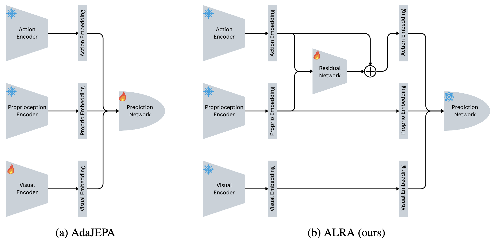
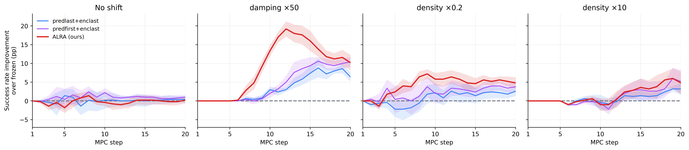

Method

When an agent encounters a dynamics shift, the environment’s visual structure is unchanged; what changes is how a commanded action translates into motion. A shift that rescales this action-to-outcome mapping leaves the predictor’s visual model intact and manifests instead as a miscalibration of the action channel.
ALRA therefore keeps the visual, proprioceptive and action encoders and the predictor entirely frozen, and computes a residual from the concatenated action and proprioceptive embeddings with an affine map gω:
The residual is zero-initialized, so adaptation begins exactly at the frozen model, and it is applied to each frame of the history window with weights shared across frames. Within each episode, only these 210 parameters are optimized online, using the latent prediction term of the pre-training objective over a replay buffer of the five most recent transitions, with one gradient step per replanning step. The residual is reset to zero at the start of every episode.
Results
PointMaze-Medium success rates under test-time dynamics shifts, 5 seeds × 100 episodes.
| Condition | Frozen | predlast+enclast |
predfirst+enclast |
ALRA (ours) |
|---|---|---|---|---|
| No shift (control) | 82.4 ± 1.9 | 82.8 ± 3.6+0.4 ± 0.9 | 83.4 ± 3.0+1.0 ± 0.5 | 82.6 ± 1.9+0.2 ± 0.9 |
| Damping 50× | 47.6 ± 3.2 | 54.0 ± 5.3+6.4 ± 1.2 | 58.0 ± 2.6+10.4 ± 1.3 | 57.8 ± 5.1+10.2 ± 2.1 |
| Density 0.2× | 84.2 ± 3.1 | 86.8 ± 1.6+2.6 ± 1.3 | 88.0 ± 3.2+3.8 ± 1.6 | 89.0 ± 4.1+4.8 ± 1.5 |
| Density 10× | 36.4 ± 5.9 | 39.6 ± 6.7+3.2 ± 1.6 | 41.6 ± 6.9+5.2 ± 3.1 | 41.2 ± 5.9+4.8 ± 3.0 |
| Adapted parameters | 0 | 9,935,648 | 9,934,840 | 210 |
Values are mean success rates (%) ± one standard deviation across 5 seeds; the smaller line is the within-seed paired difference from the frozen baseline ± one standard error of that mean over seeds. A dot marks the best adapted method in each row and any within 2 percentage points of it; the frozen column is the reference and is excluded.
Adaptation across the episode

Under the 50× damping shift, ALRA’s benefit emerges earlier in the episode: by
replanning step 12 it has recovered +19.2 points over the frozen
baseline, where predfirst+enclast has recovered +5.0,
with the two converging by step 20. We attribute this to the size of the adapted parameter
set, but do not isolate it from the learning rate, and the effect is specific to this
condition.
Rollouts
One planning episode per condition, all from the same start and goal, so only
the physics changes between rows. Columns compare the frozen world model, AdaJEPA’s
predfirst+enclast (9,934,840 parameters adapted online) and ALRA (210).
predfirst+enclastpredfirst+enclastpredfirst+enclastpredfirst+enclastThe episode was chosen to illustrate the four conditions under a common start and goal; it is not a random draw, and a single episode is not representative of aggregate performance. The quantitative comparison is the table above.
Scope and limitations
- Where it helps. ALRA’s effectiveness tracks how directly a shift rescales the mapping from action to motion. Under the 10× mass increase, which alters the agent’s momentum rather than the gain relating action to motion, no method, ALRA or the representational baselines, recovers more than a small share of the degradation.
- A single environment. All results are on PointMaze-Medium; whether the action-space decomposition holds under contact-rich dynamics, where a shift may act on a manipulated object rather than the agent, remains open.
- Learning rate per shift family. ALRA uses η = 10−2 for the control and damping conditions and 10−4 for density, whereas the baselines use a single learning rate from the original implementation. This gives ALRA a tuning advantage the baselines were not given.
- Per-episode recalibration. The residual is reset at the start of each episode and never persisted, so ALRA does not accumulate a correction across deployment.
BibTeX
@misc{soni2026alra,
title = {ALRA: Action-Latent Residual Adaptation for World Models},
author = {Soni, Krishnam and Sehgal, Aditya and Dave, Vedant and Rueckert, Elmar},
howpublished = {NeurIPS 2026 Workshops (CL4FMAgents, TTCL, PTA)},
year = {2026},
url = {https://openreview.net/forum?id=r5DF75OXlT}
}